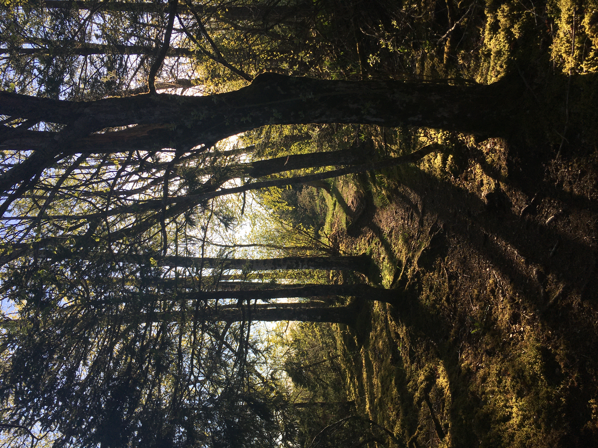
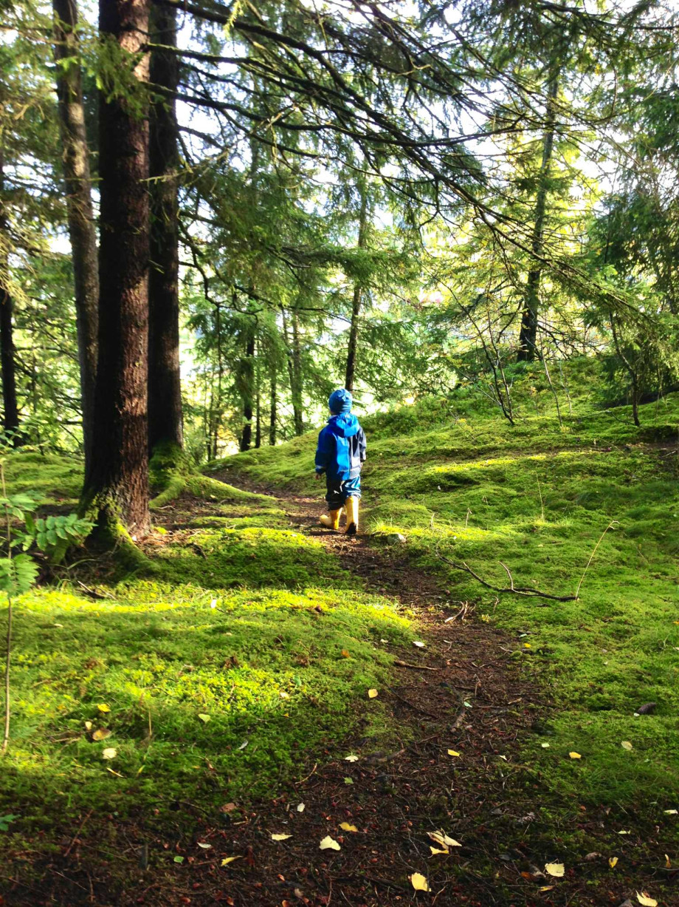
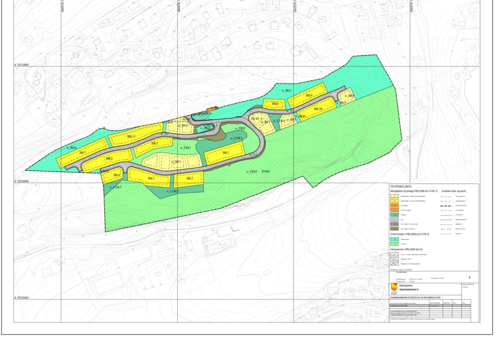
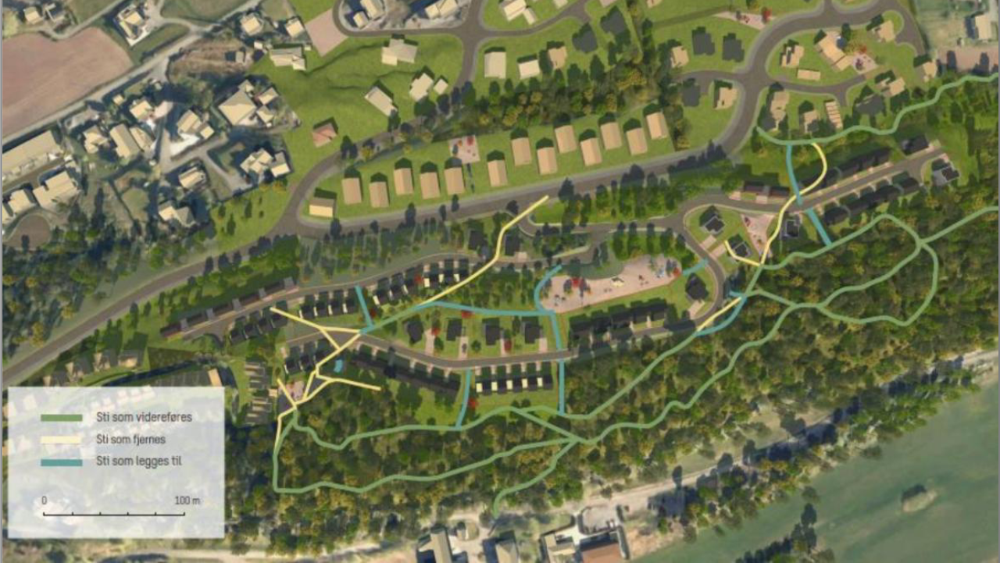
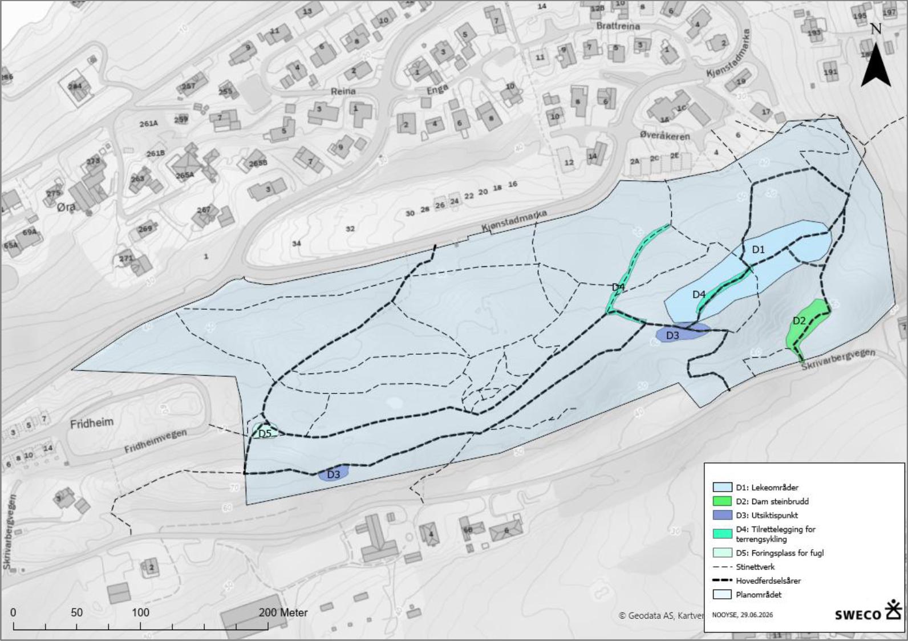

Kjønstadmarka er nærturområdet der barn leker og lærer, folk går tur, fuglelivet er rikt og floraen unik. Vi arbeider for å verne hele Kjønstadmarka 4 — før siste byggetrinn tar over halvparten av den gjenværende skogen.

Kjønstadmarka er et sammenhengende skogsområde omkranset av boliger og jordbrukslandskap — i gang- og sykkelavstand for dem som bor rundt. Nettopp derfor er det så mye brukt, hver eneste dag.
Gapahuk, bålplasser, trehytter og lekeinstallasjoner sørøst i marka. Brukes jevnlig av flere klassetrinn ved Nesheim skole — også i undervisning — og av Gjemble barnehage.
Rikt fugleliv og kalkkrevende flora. Utsiktspunkter, gode solforhold og et godt lydmiljø gir opplevelseskvaliteter som er sjeldne så nær tettbygde strøk.
Rester etter eldre steinuttak og steingjerder fra tidligere jordbruk. Stiene bærer tydelig preg av at området er mye brukt gjennom generasjoner.

Detaljregulering av Kjønstadmarka 4 er fjerde og siste byggetrinn. Planen legger opp til eneboliger, rekkehus og veger på minst halvparten av dagens friluftsområde.
Statsforvalteren har to ganger opphevet kommunens vedtak på grunn av mangler ved utredningen — særlig av friluftsinteresser, barn og unges bruk og folkehelse.
«Slik vi ser det, kreves det en konsekvensutredning. En KU må behandle virkningene for friluftsinteressene i hele planområdet, inkludert den nordlige delen. […] Det må videre vurderes i hvilken grad tilgrensende temaer, som f.eks. natur, barn og unge og folkehelse, skal tas med.»
Vi mener den nye konsekvensutredningen for friluftsliv ikke svarer på det Statsforvalteren krevde. Blant manglene:
Statsforvalteren pekte på mangler som også omfattet natur, barn og unge og folkehelse. Her utredes kun friluftsliv — barn og unges bruk bare som et delaspekt, ikke som eget tema.
KU-forskriften krever vurdering av realistiske alternativer. Et forslag om redusert utbygging finnes og ligger ved saken — men er ikke konsekvensutredet. Politikerne mangler et reelt mellomalternativ.
Barnehagedata fra 2013, ingen svar fra Gjemble barnehage, kun to befaringer i mai/juni (ingen vinterbruk) og Strava-data som underrepresenterer barn og eldre. Likevel vurderes usikkerheten som «lav».
Kommunens egen kartlegging registrerer området som svært viktig, men verdien settes til «stor», ikke «svært stor». Riktig sammenstilling gir stor negativ konsekvens — ikke middels, som rapporten konkluderer med.
Det viktigste anbefalte tiltaket — vegetasjonsbeltet mellom skog og nye boliger — foreslås ikke tatt inn i planbestemmelsene. Uten bestemmelse er det ikke bindende, og premissene for konklusjonen svikter.
Utredningen rangerer selv nullalternativet — ingen utbygging — som det beste. Tiltakshierarkiet (unngå → begrense → istandsette → kompensere) tilsier at eneste reelle avbøting er å la skogen stå.
Utredningen sier «33 % av influensområdet». Men influensområdet inkluderer privat beitemark, bergskrenter, grøfter og areal helt inntil husvegger. Måler man den fungerende nærskogen — det folk faktisk bruker til lek, tur og stier — er tapet godt over halvparten.



Vårt mål er å verne hele Kjønstadmarka 4. Fram til det er sikret, ber vi Levanger kommune om et forsvarlig beslutningsgrunnlag før planen behandles på nytt.
I brev til ordfører og kommune ba vi om utsatt høringsfrist og stilte grunnleggende spørsmål ved premissene for utredningen. Kommunedirektøren svarte 8. juli. Svarene bekrefter flere av våre bekymringer.
Statsforvalteren krevde utredning av friluftsinteressene i hele planområdet — og vurdering av natur, barn og unge og folkehelse.
KU friluftsliv er den konsekvensutredningen som utarbeides før ny sluttbehandling. Det planlegges ingen flere høringer før saken avgjøres.
Altså: én friluftslivsrapport skal alene svare på hele Statsforvalterens krav — uten egne utredninger for natur, barn og unge eller folkehelse.
Er valg av utreder, avgrensning og høringsfrist bestemt av administrasjonen alene — uten politisk behandling?
Vedtaket er håndtert av kommunen som tiltakshaver. Det er «formelt sett ikke nødvendig med en politisk involvering». Formannskapet fikk en muntlig orientering 20. mai — det finnes ikke saksframlegg eller annen dokumentasjon av den.
Altså: premissene er lagt administrativt, og den eneste politiske involveringen er udokumentert.
Vi ba om at utrederens nøytralitet og uavhengighet vurderes — samme firma har tidligere konkludert med at tiltaket ikke får vesentlige konsekvenser.
Sweco har hatt hele reguleringsoppdraget for Kjønstadmarka 4, og det er «derfor naturlig» at de også får konsekvensutredningen. «Kvalitet og innhold står for SWECO sin regning.» Finner vi feil eller mangler, bes vi omtale det i høringsuttalelsen.
Altså: ingen habilitetsvurdering er gjort — utbyggers eget konsulentfirma gransker sitt eget prosjekt, og ansvaret skyves over på Sweco.
Vi ba om at høringsfristen forlenges fra seks uker til tre måneder, med frist 2. oktober 2026 — en så omfattende sak bør ikke høres i fellesferien. Kommunen avslo: fristen ble kun flyttet til 15. september, etter innspill fra Rødt og SV, og «det er ikke hensiktsmessig» å forlenge ytterligere.
Etter krav om innsyn har vi fått referatene fra møtene mellom Levanger kommune og Sweco om bestilling og gjennomføring av konsekvensutredningen. De gir grunn til bekymring.
Sweco skal «vurdere påliteligheten» i uttalelser som allerede foreligger, fordi de «gjerne er litt farget av engasjementet». Naboenes og skolens stemme stemples som partsinnlegg før utredningen starter. (referat 12.05.2026)
Allerede i bestillingsmøtet ble det vurdert at det «uansett ikke vil være aktuelt» med egne fagrapporter på temaene Statsforvalteren nevnte spesifikt i sitt vedtak. (referat 12.05.2026)
Fremdriften ble rigget mot planutvalget 2. september og kommunestyret 23. september — med den konsekvens at høringen måtte legges i fellesferien. Målet var vedtak, ikke medvirkning. (referat 12.05.2026)
Etter første befaring skrev Sweco at foreløpige vurderinger «tyder på at man må ta en vurdering på om noen boliger må tas ut av planen». Selv utrederen ser at planen går for langt. (referat 03.06.2026)
Kommunedirektøren bekrefter at kommunen har to roller i saken — tiltakshaver og planmyndighet — og avviser samtidig at saksbehandlingen bør settes bort til noen uten historikk i saken. (svarbrev 07.07.2026)
Jo flere vi er, desto mer tyngde har vi overfor kommunen og media. 100 kr i året for voksne, gratis for barn.
Meld deg inn →Alle kan sende inn merknad til kommunen mens høringen pågår. Send til postmottak@levanger.kommune.no eller pr. post til Levanger kommune, Postboks 130, 7601 Levanger.
Vi planlegger folkemøte på Nesset samfunnshus og inviterer politikere som støtter vern. Følg med og bli med.
Hold meg oppdatert →Medlemskap koster 100 kr per år for voksne. Barn under 18 år er gratis medlemmer. Kontingenten går uavkortet til arbeidet med å verne marka.
Vi bruker appen Spond for å organisere aktiviteter og dele informasjon. Åpne lenken for å melde deg inn.
Vedtekter for Vern Kjønstadmarka — vedtatt 28.06.2026
§ 1 Formål
Vern Kjønstadmarkas formål er på frivillig basis å arbeide for å verne hele Kjønstadmarka 4 — både hensynssonen og områdene som er avsatt til boliger og veger mv.
§ 2 Årsmøtet
Årsmøtet er Vern Kjønstadmarkas øverste organ og holdes hvert år innen utgangen av april med 14 dagers varsel. Alle med betalt kontingent og som opptrer i samsvar med § 5 har stemmerett. Styret legger fram årsberetning og revidert regnskap. Leder, styremedlemmer og varamedlemmer velges for to år (ved det første styret: halvparten for to år, resten for ett år, slik at vervene rulleres). Vedtektsendringer krever 2/3 flertall og må fremsettes en måned før årsmøtet.
§ 3 Ekstraordinært årsmøte
Holdes når styret finner det nødvendig, eller minst 1/3 av medlemmene krever det. Innkallingsfrist minimum 10 dager.
§ 4 Styret
Vern Kjønstadmarka ledes av et styre på sju medlemmer — leder og seks styremedlemmer — samt tre varamedlemmer. Styret velger selv nestleder, sekretær og kasserer. Styret er beslutningsdyktig når leder eller nestleder og tre styremedlemmer er til stede. Leder og nestleder eller kasserer har i fellesskap signaturrett.
§ 5 Medlemmer
Alle som uttrykkelig er enig i formålet og aksepterer vedtektene, og har betalt kontingent, kan være medlemmer. Barn under 18 år er gratis medlemmer. Stemmerett fra fylte 18 år. Medlemmer som bryter vedtektene eller motarbeider organisasjonens formål, mister retten til medlemskap.
§ 6 Gaver
Pengegaver settes på rentebærende bankkonto og brukes kun i samsvar med formålet.
§ 7 Oppløsning
Skjer ved et særskilt sammenkalt møte, innkalt med minst en måneds varsel, og krever 2/3 flertall av de fremmøtte. Oppløsningsmøtet bestemmer disponeringen av gjenværende midler, som forutsettes brukt til friluftsliv i Kjønstadmarka.
Kryss av at du har lest vedtektene før du melder deg inn.
Vi het tidligere «Interessegruppa for bevaring av skogen i Kjønstadmarka». 28. juni 2026 ble gruppen stiftet som forening under navnet Vern Kjønstadmarka, med vedtekter og styre. Det gir oss en formell organisasjonsform — vi kan registreres i Brønnøysundregistrene, ta imot gaver og søke tilskudd — og dermed stå sterkere i saken.
Vil du melde deg inn, hjelpe til eller vite mer om saken? Send oss en e-post, så tar vi det derfra.